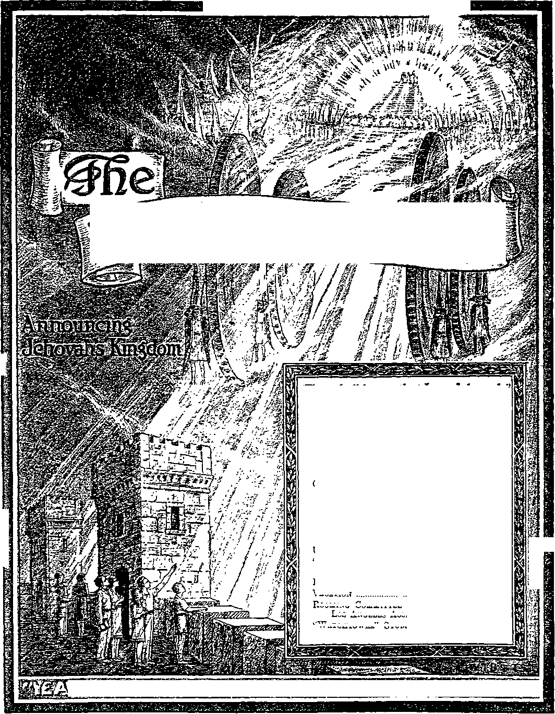

ft
£
WATCHTOWro.!
-Ezekiel 35:15.
Vol. LXVIII Semimonthly No. 11
JUNE 1, 1947
CONTENTS
Church and Kingdom ...........
Called Out .............................
163
164
Many Congregations but One Church .. 165
Translated into a Kingdom ... A Difference ...........................
“Children of the Kingdom” . Kingdom Yet to Be Gained
166
168
169
170
Unhampering Gladness in Australia .. 171 “Jehovah’s Christian Witnesses”
Testimony Period ...............
Eastern Seaboard Convention Vacation
162
162
162
Rooming Committee Address for Los Angeles Assembly “Watchtower” Studies
162
162
Published Semimonthly By
WATCH TOWER BIBLE & TRACT SOCIETY 117 Adams Street • - Brooklyn 1, N.Y., U.S.A
Officers
N. H. Knobb, President Grant Suiter, Secretary
“And all thy children shall be taught of Jehovah; and great shall be the peace of thy children.” - Isaiah 54:13.
THE BIBLE CLEARLY TEACHES
THAT JEHOVAH is the only true God, from everlasting to everlasting, and is the Maker of heaven and earth and Giver of life to his creatures; that the Word or Logos was the beginning of his creation and his active agent in creating ail other things; and that the creature Lucifer rebelled against Jehovah and raised the issue of His universal sovereignty;
THAT GOD created the earth tor man, made perfect man for the earth and placed him upon it; that man yielded to unfaithful Lucifer, or Satan, and willfully disobeyed God’s law and was sentenced to death; that by reason of Adam's wrong act all men are born sinners and without the right to life;
THAT THE LOGOS was made human as the man Jesus and suffered death in order to produce the ransom or redemptive price for obedient men; that God raised up Christ Jesus divine and exalted him to heaven above every other creature and clothed him with all power and authority as head of God’s new capital organization;
THAT GOD’S CAPITAL ORGANIZATION is a Theocracy called Zion, and that Christ Jesus is the Chief Officer thereof and Is the rightful King of the new world; that the faithful anointed followers of Christ Jesus are Zion's children, members of Jehovah’s organization, and are His witnesses whose duty and privilege it is to testify to Jehovah’s supremacy and declare his purposes toward mankind as expressed in the Bible;
THAT THE OLD WORLD, or Satan's uninterrupted rule, ended A.D. 1914, and Christ Jesus has been placed by Jehovah upon the throne, has ousted Satan from, heaven, and now proceeds to vindicate His name and establish the “new earth”;
THAT THE RELIEF and blessings of the peoples can come only by Jehovah’s kingdom under Christ, which has begun; that His next great act is to destroy Satan’s organization and establish righteousness completely in the earth; and that under the Kingdom the people of good-will surviving Armageddon will carry out the divine mandate to “fill the earth” with righteous offspring, and that the human dead in the graves will be raised to opportunities of life on earth.
ITS MISSION
HIS journal is published for the purpose of enabling the people to know Jehovah God and his purposes as expressed In the Bible. It publishes Bible instruction specifically designed to aid Jehovah’s witnesses and all people of good-wllL
It arranges systematic Bible study for its readers and the Society supplies other literature to aid In such studies. It publishes suitable material for radio broadcasting and for other means of public Instruction In the Scriptures.
It adheres strictly to the Bible as authority for Its utterances. It is entirely free and separate from all religion, parties, sects or other worldly organizations. It is wholly and without reservation for the kingdom of Jehovah God under Christ his beloved King. It is not dogmatic, but invites careful and critical examination of its contents in the light of the Scriptures. It does not Indulge in controversy, and its columns are not open to personalities.
Notice to Subscribers.- Remittances should be sent to office In your country in compliance with regulations to guarantee safe delivery of money. Remittances are accepted at Brooklyn from countries where no office is located, by international money order only. Subscription rates in different countries are stated below in local currency. A’ottce of expiration (with renewal blank) is sent at least two issues before subscription expires. Change of address when sent to our office may be expected effective within one month. Send your old as well as new address.
Please address the Watch Tower Society in every case.
Offices Yearly Subscription Rate
America (U.S.), 117 Adorns st., Brooklyn 1, N.Y.
Austi alia, 7 Beresford Rd., Strathtield, N. S. W.
British West Indies, 21 Taylor St., Port of Spain, Trinidad
Canada, 40 Irwin AveM Toronto 5, Ontario
England, 34 Craven Terrace, London, W. 2
India, 107 Love Lane, Bombay 27 Ra 3/8
Jamaica, 161 King St., Kingston
New Zealand, <1. P. O. Box 30, Wellington, C. 1
Philippine Islands, 2021 Int. 2 Harran, Santa Ana, Manila 2 pesos
South Africa, “623 Boston Housej-Cape- Town
Translations of this journal appear in many languages.
ALL SINCERE STUDENTS OF THE BIBLE who by reason of Infirmity, poverty or adversity are unable to pay the subscription price may have The Watchtower free upon written application to the publishers, made once each year, stating the reason for so requesting it. We are glad to thus aid the needy, but the written application once each year fs required by the postal regulations.
Printed In the United States of America
Entered as second-class matter at the post office at Brooklyn, N. T., under the Act of March 3, 1879.
“JEHOVAH’S CHRISTIAN WITNESSES” TESTIMONY PERIOD
The month of June, designated as above, starts off the fourmonth campaign of reaching out into the extensive rural territory with the message of Jehovah’s kingdom by his Christ. The special offer featuring the campaign is that of three bound books on a $1.00 contribution, this to include, if possible, the Theocratic ministry school book “Equipped for Every Good Work” and “Let God Be True” along with one other Watchtower publication. Placed alone, “Equipped for Every Good Work” will continue to be offered on a half-dollar contribution. In view of the worthiness of it, preparations for this expansion work should go forward as early as possible, individually and collectively. A mere postcard or other request notice will call us to your aid and instruction if you, as a Watchtower reader, want to lend a hand in this work. Please report your June witnessing activity.
EASTERN SEABOARD CONVENTION
Many '-Watchtower readers find themselves unable financially or otherwise to attend the convention at Los Angeles, California, in August. Now we are very happy to advise that there will be a like convention for the benefit of the brethren in the East. The commodious Convention Hall, 34th Street near Spruce Street, Philadelphia, Pennsylvania, has now been engaged for a three-day convention, November 21, 22 and 23, 1947. At this convention the president of the Society and other official members will be in attendance and serve from the platform. More information later.
VACATION
In order that companies and pioneers may plan their work for about two months of the period affected, they should order literature well in advance of August 9. This instruction is given in view of the information we here give that the Brooklyn factory, office and Bethel home will be closed for the period of Saturday, August 9, to Sunday, August 24, inclusive. This vacation arrangement will allow for some members of the Bethel family who can so order their affairs to attend the national assembly of Jehovah’s witnesses in California, August 13 to 17. During the vacation period as little correspondence as possible should be sent to the Society, with the exception of report cards and subscriptions.
ROOMING COMMITTEE ADDRESS FOR LOS ANGELES ASSEMBLY
Watchtower readers planning to attend the national convention in Los Angeles, California, August 13 to 17, are hereby informed that the address of the Rooming Committee for that assembly is Watchtower Convention Rooming Committee
106 W. Venice Boulevard
Los Angeles 15, California
Kingdom publishers will please see the June Informant for further details.
“WATCHTOWER” STUDIES
Week of July 6: “Church and Kingdom,” fl 1-20 inclusive, The Watchtower June 1, 1947.
Week of July 13: “Church and Kingdom,” fl 21-42 inclusive, The Watchtower June 1, 1947.
“Who hath delivered us from the power of darkness, and hath translated us into the kingdom of his dear Son: and he is the head of the body, the church.”—Col. 1:13,18.
JEHOVAH God has an assembly of people who are I separate and distinct from the politics, commerce J and religion of this world. The English-speaking religionists of Christendom have chosen to call this assembly of God’s people by the name “church”. Claiming to be it, they have called their own religious organizations by that name, and have thereby created much confusion and brought much reproach upon the true assembly of Jehovah God’s people.
2 All those religious organizations are on close terms with the institutions of this world and conform themselves to such institutions in many ways. Such religious organizations are more or less independent of one another and divided against one another in what they teach and practice. Not only that, but, by following each one the politics and national policies of the respective nations where they religiously operate, they are divided politically, following the lead of the national rulers. The whole religious organization of Christendom appears like a “kingdom divided against itself” and like a “city or house divided against itself”. Can such an organization, whose worldly dividedness dooms it to fall, be the true assembly of God’s people? No! Letting God speak for himself, we hear him say by his inspired apostle: “You are still worldly. For when there are still jealousy and quarrels among you, are you not worldly and living on a merely human level? For when one man says, T am a follower of Paul,’ and another, ‘I am a follower of Apollos,’ are you not simply human?” “For God is not a God of disorder but of peace. This is the rule in all Christian churches.” (1 Cor. 3:2-4 and 14:33, An Amer. Trans.) It follows, then. is s assemblv
today is not worldly, not conformed to this divided world and not' in confusion and disorder. It must be and is at unity and peace within itself. It will never fall divided. It is therefore fitting, at this crucial time in human history, to determine from God’s own Word what is His true assembly, with what nation it is identified, and to what government it holds allegiance.
1. How have religionists caused confusion concerning the church?
2. How does dmsion show Christendom is not God’s church?
8 Before the true Christian church, Jehovah God had a church or assembly of people devoted to him. This was the Jewish nation. It is not necessary to quibble about this point. Stephen, the first follower of Jesus Christ to be stoned to death, pointed out this fact definitely to the Jewish court trying him. He said: “This [Moses] is he that was in the church in the wilderness with the angel that spake to him in the mount Sinai, and with our fathers: who received living oracles to give unto us.” (Acts 7:35-38, Am. Stan. Ver.) In this statement the martyr Stephen used the same name church (or ecclesia) that is applied to Jesus’ footstep followers.
4 Luke, the writer of Acts of the Apostles, is the one that gives the account of Stephen’s defense before the Jewish Sanhedrin. Evidently Luke borrowed the word ecclesia from the Greek Septuagint translation of the Hebrew Scriptures. In that Greek translation the Israelite congregation or assembly begins to be called the church or ecclesia of Jehovah God from the time of Moses onward. According to the Greek Septuagint Moses said: “I went up the mountain to receive the tables of stone—the tables of the covenant which the Lord had made with you. Now I was on the mount forty days, and forty nights; I neither ate bread nor drank water; and the Lord gave me the two tables of stone written with the finger of God—upon them indeed were written all the words which the Lord had spoken to you at the mount, on the day of the solemn assembly [ecclesia].” (Deut. 9:9,10, Thomson) Throughout the book of Deuteronomy this name assembly (or ecclesia) is used, to mean the congregation of Israel. The psalmist David, who came four hundred years after Moses, wrote: jl will declare thy name Xo my brethren: in the midst of a congregation [ecclesia] I will sing praise to thee.” (Ps. 22: 22, Thomson) David, as far as he himself was concerned, meant singing Jehovah’s praises in the midst of the Israelite congregation or ecclesia. But his words were a prophecy, and the inspired apostle Paul quotes David’s words and applies them to Jesus Christ, saying: “For which
3. Did God have a church previously? and if so, what was it?
4. When was the name applied to Israel? and to whom transferred?
cause he is not ashamed to call them brethren, saying, I will declare thy name unto my brethren, in the midst of the church [eccfesia] will I sing praise unto thee.” (Heb. 2:11,12) Thus the transfer of the term ecclesia or church is made from the Israelite congregation to the Christian congregation.
CALLED OUT
5 In the simplest meaning of the name, ecclesia means an assembly, which has been summoned or called forth whether by the proper official authorities or not. When the Ephesian religionists of the very catholic worship of the goddess Diana rioted against Paul and crowded into the city theater, it was an unofficial assembly. “Some therefore cried one thing, and some another: for the assembly [ecclesia] was confused; and the more part knew not wherefore they were come together.” After some two hours of this, the city recorder took charge and called the irregularity of the assembly to their notice and told them the right way, saying: “But if ye enquire any thing concerning other matters, it shall be determined in a lawful assembly {.ecclesia}. For we are in danger to be called in question for this day's uproar, there being no cause whereby we may give an account of this concourse.” “And when he had thus spoken, he dismissed the assembly [ecclesia].” In this case the rioters that had come forth from their homes and business places returned to them, until the next regular or irregular assembly.—Acts 19: 29-41.
8 In the case of the Israelite congregation in the days of Moses it was peculiarly fitting to speak of them as an ecclesia or called-forth assembly. At the burning bush near Mount Horeb Jehovah said to Moses: “Come now therefore, and I will send thee unto Pharaoh, that thou mayest bring forth my people the children of Israel out of Egypt.” (Ex. 3:10) By Moses Jehovah God said to Pharaoh of Egypt: “Thus saith the Lobd God of Israel, Let my people go, that they may hold a feast unto me in the wilderness.” (Ex. 5:1) When the Israelite escapees from Egypt finally reached Mount Sinai in Arabia, Jehovah said to them by Moses: “Ye have seen what I did unto the Egyptians, and how I bare you on eagles’ wings, and brought you unto myself. Now therefore, if ye will obey my voice indeed, and keep my covenant, then ye shall be a peculiar treasure unto me above all people: for all the earth is mine. And ye shall be unto me a kingdom of priests, and an holy nation.”—Ex. 19: 3-6.
1 It is evident that the Israelite congregation was officially called out of heathenish Egypt by the Supreme Power, Jehovah God. So, by his special miraculous deliverance of them, they were His called-out assembly or ecclesia. By Jehovah’s act they were,
5, What is the simplest meaning ot “ecclesia”? Illustrate. G, 7. How did the term “ecclesia*’ fit Israel quite literally? in fact, separated from all the world, of which Egypt was only a dominant part. Jehovah God set before this church or ecclesia the hope of becoming a kingdom of priests to him by virtue of faithful devotion and worship toward Him. About 430 years before this he had called out their forefather Abraham from Ur of the Chaldees to go into the Promised Land to which he was now leading them. God had promised that in Abraham’s son Isaac he would make his seed or descendants a multitudinous assembly of people. So when blessing his own son Jacob, Isaac said: “And God Almighty bless thee, and make thee fruitful, and multiply thee, that thou mayest be an assembly of people." (Gen. 28: 3, marginal reading) Now, here the Israelites were indeed an assembly of several million, and they had been called out of Egypt to be Jehovah God’s congregation. Also they were the descendants of the patriarch Abraham, who had been called out of Ur to be separate thenceforth from Chaldea and the rest of the world. So the term ecclesia fitted them quite literally.
8 However, at Pentecost A.D. 33 the Israelite nation ceased to be the assembly, church or ecclesia of Jehovah God. Who from then on should be his church God indicated by pouring out his holy spirit in fulfillment of His own prophecy of Joel 2: 28, 29. With the exception of a God-fearing remnant that eonseeratedly followed in the footsteps of God’s Son Jesus Christ, the Jewish nation was cast off, and the faithful remnant that believed God’s prophecies became the small start of his anointed church or ecclesia. The prophecy at Joel 2: 28-32 clearly said that the outpouring of his spirit would not be on Jewish flesh alone but upon all that should call upon Jehovah’s name through his Christ. And hence the church or ecclesia of God was foretold to be not only of one-time Jews but also of one-time Gentiles, heathens or pagans. (Acts 2:16-21) From then on the Jewish believers and the Gentile believers in Jehovah and his Christ were to be united in one assembly, church or ecclesia.
9 The Israelite congregation of old time was called out of Egypt because they were the offspring of Abraham, who had been called out of Chaldea. In the same manner the Jewish and Christian believers in Jehovah that follow Christ's footsteps are called out of this world. Both Chaldea and Egypt foreshadowed this world out of which they are called, and they are spiritually the descendants of Abraham by reason of faith in Jehovah God and his Christ. “Know ye therefore that they which are of faith, the same are the children of Abraham. And the scripture, foreseeing that God would justify the heathen through faith, preached before the gospel unto Abraham, saying, In thee shall all nations be blessed.” (Gal. 3:7,8)
8. When did Israel cease to be it, and who became the church?
9. How is the Christian church, Jew and Gentile, a called-out company? The faithful Jewish remnant was called out from among the rejected Jewish nation, and the believing Gentiles were called out from the rest of the nations of the world. All such, Jew and Gentile together, became the people for God’s name. The Jewish believer James gave this inspired interpretation to the matter before the council of Christians at Jerusalem, saying: “Simeon [Peter] hath declared how God at the first did visit the Gentiles, to take out of them a people for his name. And to this agree the words of the prophets.” (Acts 15:14-17) This makes them a called-out company, indeed.
10 This assembly, congregation or ecclesia is now the church of God, and the Holy Scriptures so speak of them and to them. It is true that Jesus Christ spoke of them as his church, saying to the apostle Peter: “And I say also unto thee, That thou art Peter, and upon this rock I will build my church.” (Matt. 16:18) Also at Romans 16:16 Paul writes to the Roman Christians: “The churches of Christ salute you.” Furthermore, the church is spoken of as the body of Christ: “And he is the head of the body, the church.” “And [God] hath put all things under his feet, and gave him to be the head over all things to the church, which is his body.” (Col. 1:18, 24; Eph. 1: 22, 23) However, Jesus too is part of that church, assembly or ecclesia, he being its head member, but the entire congregation is Jehovah’s. The Jews may not have minded so much for some individual like Jesus to have a church or assembly of his own, if they could have kept on in their claims of being the church or ecclesia of Jehovah God. The unique and exclusive position was that of being His assembly. Hence when Jesus’ followers came along and claimed that favored position it aroused the natural Jews to jealousy indeed. This is what Jehovah foretold in a warning to them that he would do. Paul writes: “But I say, Did not Israel know? First Moses saith, I will provoke you to jealousy by them that are no people, and by a foolish nation I will anger you.”—Rom. 10:19, 20.
11 Repeatedly the Christian congregation is spoken of as the “church of God” and is addressed as such. For example, the apostle commences his first letter to the Corinthians with this address: “Paul, called to be an apostle of Jesus Christ through the will of God, and Sosthenes our brother, unto the church of God which is at Corinth, to them that are sanctified in Christ Jesus, called to be saints”; and he begins his second epistle to them with the same form of address. He writes the congregations in Galatia, saying: “Ye have heard of my conversation in time past in the Jews’ religion, how that beyond measure I persecuted the church of God, and wasted it.” (Gal. 1:13) He thus shows that the practicers of the Jews’ 10, 11. Why did Jesus speak o£ it a* hiR church’ but whose is it primarily, and why?
religion or Judaism were not the church of Jehovah God. Pointing out that God had now formed his church under Christ Jesus as Head, he writes to the Thessalonians to say: “For ye, brethren, became followers of the churches of God which in Judaea are in Christ Jesus: for ye also have suffered like things of your own countrymen, even as they have of the Jews: who both killed the Lord Jesus, and their own prophets, and have persecuted us; and they please not God.” (1 Thess. 2:14,15; 2 Thess. 1:4) Paul also gave the elder brethren from the congregation of Ephesus this counsel: “Feed the church of God, which he acquired by the blood of his own.” (Acts 20:28, The Emphatic Diaglott) The Jewish nation stubbornly refused to be bought with the blood of God’s own Son in order to become his newly-acquired church.
MANY CONGREGATIONS BUT ONE CHURCH
12 Note that expression “churches of God”. This does not signify the existence of many denominations, sects and cults, each having God’s recognition as being his Theocratic organization. Back in the apostolic days we do read of the “churches of Galatia”, the “churches of Asia”, the “churches of Macedonia”, the “churches of Judaea”, the “church of the Laodiceans”, the “church of the Thessalonians”, and respective churches at Ephesus, Smyrna, Pergamos, Thyatira, Sardis, Philadelphia, and Jerusalem. No one who intelligently reads the inspired writings of Jesus’ disciples will for a moment think this means national churches, each having an independent organization and its own different creed and different rites, practices and organization, such as exist in Christendom today.
18 We challenge any religionist to prove that these early churches in the various nations followed any political strong man that rose up and took over the reins of government, or that they fought and committed aggressions upon other Christians following likewise the political strong man of their nation, the churches of Asia fighting against the churches of Macedonia, and the church at Rome fighting against the churches of Judea. When the Roman prince, Titus son of Emperor Vespasian, led his armies to the destruction of Jerusalem in 70 (A.D.), who can prove that the church at Rome followed the political and imperial policy of Rome and fought with Titus against the church at Jerusalem and, vice versa, that the church at Jerusalem joined in with the resisting Jews and fought against the church at Rome? To the contrary, history shows that the Christians at Jerusalem obeyed Jesus’ advice: “When ye shall see Jerusalem compassed with armies, then know that the desolation thereof is nigh. Then let them which are
12, 13. How are the churches In apostolic times spoken of? but wbat does this not prove?
in Judeea flee to the mountains; and let them which are in the midst of it depart out; and let not them that are in the countries enter thereinto.”—Luke 21:20,21.
11 In apostolic times the churches were not divided and opposed to one another according to the politics of the nations of this world; and there were no national churches. If the apostle Paul decried Christians’ becoming divided over following different prominent servants in the church, such as himself, or Peter Cephas, or Apollos, how much more is it to be decried when Christians attempt to follow national political leaders and political standards which are not of God and Christ but are of this world1? Did not James the disciple write: “From whence come wars and fightings among you?” And he answered: “Ye kill, and desire to have, and cannot obtain: ye fight and war, yet ye have not, because ye ask not. Ye ask, and receive not, because ye ask amiss, that ye may consume it upon your lusts. Ye adulterers and adulteresses, know ye not that the friendship of the world is enmity with God? whosoever therefore will be a friend of the world is the enemy of God.” (Jas. 4:1-4) If honest men will fearlessly probe the facts, they will find that both World War I and World War II were directly due to such spiritual adultery by Christendom and its hundreds of religious organizations that take the name of “church of Christ”. They therefore stand convicted as being enemies of God and not the church of God under Christ.
13 The above names merely indicated where the various churches or congregations were located. But the same governing body of Jesus’ apostles and their authorized associates ministered to all these churches, whether in Asia, Europe or Africa, and they issued the same organization instructions for them all. Thus, for instance, Paul, Barnabas and Silas carried the decrees from the conference at Jerusalem to the churches in other provinces of the Roman Empire. “And he went through Syria and Cilicia, confirming the churches.” “And as they went through the cities, they delivered them the decrees for to keep, that were ordained of the apostles and elders which were at Jerusalem. And so were the churches established in the faith, and increased in number daily.”—Acts 15: 22-41; 16:4, 5.
16 The first church of Christians that we read about is “the church which was at Jerusalem”, but by the activity of its members even under persecution other churches or congregations were established in other cities and provinces. (Acts 8:1; 9: 31; 11:22) After the apostle Peter carried the gospel of the kingdom of God to the first Gentile to be converted, Cornelius
14 . What division did Paul decry? and what do we decry today? 15. Despite all those names above, who ministered to them all?
16 . How did Gentile churches come? but still at one with whom? the Italian centurion, then churches were established among the Gentiles. Thereafter we read of “the churches of the Gentiles”. Paul especially was responsible for the establishment of many of these, because he was outstandingly "the apostle of the Gentiles”. (Rom. 16:4; 11:13) But, whether exclusively of Jews or exclusively of Gentiles or of mixed membership, they were all at peace and unity with one another and not conformed to this world of politics, commerce and demon religion. All were composed of persons consecrated to God and sanctified by His spirit upon them, and, resultantly, they were “churches of the saints”, concerning which Paul states: “For God is not the author of confusion, but of peace, as in all churches of the saints.” (1 Cor. 14:33) Although physically separated by space or distance into many local congregations, the members of all these congregations together make up the one church of God, because they obey his commandments through his Theocratic organization and they have the one God-appointed Head, namely, Christ Jesus.
17 They do not have their natural descent recorded upon the birth registries at Jerusalem or other cities in the one-time Holy Land of Palestine, but as “new creatures” in Christ they trace their begettal to God in heaven. They have been begotten by Him by means of his Word and holy spirit to be his spiritual children; and Jesus Christ the firstborn Son of God is their spiritual brother who is not ashamed to confess them as his brethren. With him they are invited to the chief position in God’s universal organization, namely, the heavenly kingdom; and this is the position of His firstborn ones. Hence they have come into what the apostle calls the “church of the firstborn, which are written in heaven”. (Heb. 12:23) In the midst of these it is that their Head, Jesus Christ, sings praise to Jehovah God by continually enlightening his footstep followers concerning God’s virtues and purposes as disclosed in the written Word of God. (Heb. 2:12) Since Pentecost A.D. 33 this church has been in building by Jesus Christ, and in the end it will have a complete membership of 144,000 under him as Head.—Rev. 7:4-8; 14:1, 3.
TRANSLATED INTO A KINGDOM
18 The apostle Paul wrote to the “saints and faithful brethren in Christ which are at Colosse” as a congregation representative of the entire “church of God”, and said: “Giving thanks unto the Father, which hath made us meet to be partakers of the inheritance of the saints in light: who hath delivered us from the power of darkness, and hath translated us into the kingdom of his dear Son: in whom we have redemption through his blood, even the forgiveness of sins; who is the image of the invisible God, 17. How Is it the church of the firstborn, written in heaven?
18. By what translation are they not of this world? and by the fight with whom do they keep their enlightened liberty? the firstborn of every creature.” (Col. 1:2,12-15) This deliverance and translation of the members of the true church of Jehovah God is something that takes place while they are still in the midst of this world. The consequence is that they are in the world, but not of it, just as Christ Jesus was. (John 8: 23; 17:14,16) The darkness from which they have been delivered is that of this world, and such darkness is due to the unseen control of this world by its god, Satan the Devil, “the prince of the demons.” To keep their delivered estate or liberty in Christ his followers must therefore wrestle against the influences of these spirit demons that dominate the world and keep it in the darkness of ignorance and divine wrath. Properly the orders to the church of God are: "Put on the whole armour of God, that ye may be able to stand against the wiles of the devil. For we wrestle not against flesh and blood, but against principalities, against powers, against the rulers of the darkness of this world, against wicked spirits in heavenly places.” (Eph. 6:11,12, margin) Only by doing so can they hold fast to “the inheritance of the saints in light”.
19 Does translating the members of the church of God into the “kingdom of his dear Son” signify that Jesus Christ began reigning in heaven from Pentecost A.D. 33, when he poured out the holy spirit from the Father -upon the first members of his church ? No; not in the sense that God’s kingdom by Christ began there and that the thousand-year reign or millennial reign of Christ began.
20 In parables Jesus pictured himself as going off to a far country, even heaven itself, to receive a kingdom. But after getting it he would be a “long time” before returning and setting himself upon his kingdom in his territory. (Matt. 25:14-19; Luke 19:12-15; Mark 13:34-36) Additionally, Jesus described the signs that would mark his return with the Kingdom; and these signs were not seen or in evidence either at Pentecost or at any time after until A.D. 1914. The conclusion then to be drawn is this: While at Pentecost, as Peter said, Jesus was at God’s right hand and had been made Lord and Christ, he did not then actively enter upon his Kingdom power, but waited for God’s future time at which to do that. (Matt. 24:3-25:41; Heb. 10:12,13) When Christ Jesus reigns for a thousand years, then, as the Scriptures definitely say, the 144,000 faithful ones of his church-body will reign with him. But at Pentecost only’the first members, about 3,000, had manifested themselves and had not proved themselves fully tested and approved for a place with him in his heavenly throne. Since Jesus did not begin to reign at Pentecost, the translating of his footstep followers into the kingdom of God’s dear Son could
19. Does tills translation mean Christ began to reign at Pentecost? 20. How do parables and signs prove he did not begin reigning then? not mean that they must reign or that they have been reigning as kings on the earth since Pentecost.
21 To certain ones that tried something like a reign of kings in the church the apostle said: “You Corinthians have your heart’s desire already, have you? You have heaven’s rich bliss already I You have come into your kingdom without us 11 wish indeed you had come into your kingdom, so that we could share it with you!” (1 Cor. 4:8, Moffatt; An Amer. Trans.) The dire consequences of such a mock reign by pretending Christians may be seen in the history of the Hierarchy of the Roman Catholic religious system, since the time of Pope Leo I of the fifth century. Both the pope and his bishops and archbishops sit on thrones and wear tiaras and claim to rule in the name of Christ, but, all along, it has been the opposite of a reign with Satan the Devil bound and with a thousand years of unbroken tranquillity in Christendom and the rest of the earth. And the dealings of the Hierarchy with Kaiser Wilhelm and Kaiser Franz Josef in World War I and with Fascist Mussolini and Nazi Hitler in connection with World War II are all too notorious to need comment here. No true Christian in the church of God wants to share in this worldly, adulterous reign with such religionists and to take the responsibilities for the God-dishonoring results from it.
22 Being translated into the kingdom of the Son of God’s love must mean, then, a transfer of one’s allegiance from this world of darkness over to God’s Son as His anointed Heir of the Kingdom. It means that such translated one is no longer in the dark as to who are “the higher powers” to whom every soul should be subject. Scripturally, the Higher Powers are Jehovah God the Supreme One and Jesus Christ, exalted to His right hand. (Rom. 13:1) So the translated one acknowledges God’s dear Son as King and yields complete obedience to him. In a case where there is a conflict between the Icings of this world and God’s beloved Son they yield uncompromising obedience to the higher King, the One at God’s right hand. They obey Peter’s words: “Fear God. Honour the king.”—1 Pet. 2:17.
23 This may and will mean suffering at the hands of the world and its rulers, just as the apostle Peter shows; but one’s integrity toward God’s kingdom by Christ Jesus must be demonstrated amid such suffering. The apostle Paul suffered on this account, particularly at the hands of envious religionists who tried to involve him with the political authorities, saying concerning Paul and his companions: “These that have turned the world upside down are come hither also; . . . and these all do contrary to the decrees of Caesar, saying that there is another king, 21. What did Paul Bay to those trying to reign now? and what dire consequences show the mockery of such attempts to reign?
22. What, then, does translation into the Kingdom mean ?
23. What else does It mean as apostolic experiences prove? one Jesus.” (Acts 17: 5-8) Likewise, the apostle John suffered banishment to the isle of Patmos, where he says this of himself: “I John, who also am your brother, and companion in tribulation, and in the kingdom and patience of Jesus Christ, was in the isle that is called Patmos, for the word of God, and for the testimony of Jesus Christ.”—Rev. 1:9.
24 Despite all, the faithful will not renounce Christ as King, but, because of their unwavering submission to him, he is King to them and they are thus in the kingdom of God’s dear Son. This does not import any seditious stand toward the kingdoms of this world, nor does it stir us up to any subversive activities against Icings and rulers of this world. It means simply that we do not interest ourselves in or participate in the political and governmental affairs of this earthly organization. We are, in fact, not in pursuit of any earthly rulership or kingdom. When the resurrected Jesus sent his servants forth into all the world to make disciples among all nations, Jesus was no longer in this world, as well as not of it, but was about to ascend to heaven to his Father’s right hand. Hence his faithful disciples, the church of God, can not reasonably be accused of trying to make some man king or ruler in place of the present ones on earth. As faithful disciples we flatly disavow that Jesus left any man or appointed any man to rule for the heavenly Christ Jesus as his vicegerent on earth. Such a claimed vicegerency is downright antichristian and has led to endless trouble between the political state and religious systems. It has bred one continuous round of religio-political conspiracies, ending up in murderous bloodletting in war. The members of God’s true church stick to Jesus’ sermon on the mount which instructs us: “Seek ye first the kingdom of God, and his righteousness.”—Matt. 6:33.
A DIFFERENCE
25 Viewed from the Bible, the church differs from the kingdom. There are many churches, all these, of course, making up the one church of God, but each one of these local or provincial churches is not a kingdom to itself, with its local king. There is just the one kingdom to which all local churches may aspire, the one of which Jesus said: “But rather seek ye the kingdom of God; and all these things shall be added unto you. Fear not, little flock; for it is your Father’s good pleasure to give you the kingdom.” (Luke 12:31,32) At no point in its growth and development could the visible church with its many local congregations have been the entire kingdom of God, but it has had to continue growing until its membership of 144,000 faithful and approved ones is all complete. It has already been in existence over nineteen centuries, with only a part of its full mem-
24. How Is he our King? and does this mean sedition on earth? 25. What differences are there between church and Kingdom? bership at any time on the earth, but God’s kingdom by Christ began wielding active power only in 1914, when the new government was born in heaven, in fulfillment of prophecy. Of the visible church on earth there shall shortly be an end, when the present-day remnant thereof will have passed off the earthly scene by death and a resurrection from the dead to heavenly life; but, respecting Christ’s kingdom, “of his kingdom there shall be no end.” (Luke 1: 33) The Memorial wine has been drunk, along with eating the bread, for many centuries in the church since its inception, but Jesus Christ promised to drink the wine “new” with his church in his Father’s kingdom, God’s kingdom, hence first “new” from and after A.D. 1914. —Matt. 26:29; Luke 22:17,18; Mark 14: 25.
28 Another fact showing that Christians have been translated into the kingdom of God’s dear Son is that they are called “the children of the kingdom”. In no text are they spoken of as children of the church, the way some clergymen call the members of their religious flocks. In a footnote of the Roman Catholic Douay Version Bible, it explains the woman described at Revelation 12:1,2,17, to symbolize the church of God. It says: “A woman. The church of God. It may also, by allusion, be applied to our blessed Lady. The church is clothed with the sun, that is, with Christ: she hath the moon, that is, the changeable things of the world, under her feet: and the twelve stars with which she is crowned, are the twelve apostles: she is in labour and pain, whilst she brings forth her children, and Christ in them, in the midst of afflictions and persecutions.” In such case, “the rest of her seed, who keep the commandments of God, and have the testimony of Jesus Christ,” would designate the children of the church, and, by the rule of allusion, the other children that Mary the mother of Jesus brought forth on earth after him her firstborn.—Matt. 13:54-56; John 7:1-5; Luke 2:5-7.
2T However, Jesus Christ is not the offspring or child of the church of God, but is the One whom God uses to build the church upon himself as the “Rock”, the Christ, the Son of the living God. For that reason the “woman” that gives birth to the man-child, namely, to Christ Jesus in the capacity of the reigning King, can not be the church, the virgin “bride” of Christ. She must be the symbolic “woman” of Jehovah God, namely, his universal heavenly organization called “Zion”, the same “woman” concerning whom God said to the Serpent in Eden: “I will put enmity between thee and the woman, and between thy seed and her seed; it shall bruise thy head, and thou shalt bruise his heel.”—Gen. 3:15.
28 In agreement with this Scriptural explanation of matters, the Word of God nowhere speaks of the
26. Translated Christians are called “children” of what?
27. Who, then, is the woman of Revelation 12:1, 2?
28. How do Is. lah and Paul speak of such woman’s “children”? children of the church, but, at Isaiah 54: 5, 6,13, speaks of the children of his “woman” or universal organization in the heavens, saying: “For thy Maker is thy husband; Jehovah of hosts is his name: and the Holy One of Israel is thy Redeemer; the God of the whole earth shall he be called. For Jehovah hath called thee as a wife . . . And all thy children shall be taught of Jehovah; and great shall be the peace of thy children.” (Am. Stan. Ver.) On these grounds the apostle says this to the “churches of Galatia": “But Jerusalem which is above is free, which is the mother of us all. So then, brethren, we are not children of the bondwoman, but of the free.”—Gal. 4:26, 31; 1 Cor. 16:1.
“CHILDREN OF THE KINGDOM”
29 Down till Jesus’ death and resurrection the Israelite nation, the typical church, had been looked upon and talked of as “the children of the kingdom”. This fact appears from Jesus’ words at the time that a Roman centurion, a Gentile, asked him to cure his servant sick at home by the use of remote control, just as this centurion was accustomed to direct his soldiers under him by sending orders to them at a distance. “When Jesus heard it, he marvelled, and said to them that followed [namely, Israelites], Verily I say unto you, I have not found so great faith, no, not in .Israel. And I say unto you, That many shall come from the east and west, and shall sit down with Abraham, and Isaac, and Jacob, in the kingdom of heaven. But the children of the kingdom shall be cast out into outer darkness: there shall be weeping and gnashing of teeth.”
30 In those words, at Matthew 8:5-12, Jesus stressed the fact that it takes faith to enter the kingdom of heaven and that there was a dearth of such faith among the natural Israelites. They were the natural descendants of Abraham, Isaac and Jacob, who had been given the covenant promises concerning the Seed in whom all the families of the earth should one day be blessed, and which Seed is Christ the King. Abraham, Isaac and Jacob pointed forward to the kingdom of heaven, namely, to God’s kingdom; and, in fact, Abraham was a prophetic type of Jehovah the Father of the Seed, whereas his beloved son Isaac was a type of the Seed, the only begotten Son of God, namely, Jesus Christ. Jacob as Abraham’s grandson was a type of the 144,000 associates of Jesus Christ in the kingdom. Abraham, Isaac and Jacob were all in favor of the kingdom of heaven, and all three kept Theocratic law as far as it was given them.
31 Their natural descendants, the Israelites, were
29. Till when was Israel spoken of as “children of the kingdom'’? and where so apoken of?
30. What fact did Jesus thus stress? and how were Abraham, Isaac and Jacob Ln the kingdom of heaven?
31. For what, then, were natural Israelites first in Une? first in line for the blessing that was due to come through the Seed, the Christ, which meant they were first in line for the Kingdom privileges. As the apostle Peter told them shortly after Pentecost A.D. 33: “Yea, and all the prophets from Samuel and those that follow after, as many as have spoken, have likewise foretold of these days. Ye are the children of the prophets, and of the covenant which God made with our fathers, saying unto Abraham, And in thy seed shall all the kindreds of the earth be blessed. Unto you first God, having raised up his Son Jesus, sent him to bless you, in turning away every one of you from his iniquities.”—Acts 3: 24-26.
"Being thus directly in line for the Kingdom opportunities by natural descent from Abraham, Isaac and Jacob and by having God’s prophets sent directly to them with the oracles of God, the natural Israelites were “the children of the kingdom”, on a conditional basis. At Sinai God said to their nation that he would make them a kingdom of priests if they kept his covenant, and so the matter was conditioned upon faith and obedience. They could not be born into the Kingdom by flesh connections, that is to say, they were not born into the Kingdom just because they were born as fleshly descendants of ‘Abraham, Isaac and Jacob, but they must exercise the faith that Abraham had toward God’s coming kingdom. Fleshly birth is not the-thing determining one’s getting into the kingdom of God in heaven. Jesus pointed that out to Nicodemus by saying: “Except a man be born again [or, from above], he cannot see the kingdom of God. . .. Except a man be born of water and of the spirit, he cannot enter into the kingdom of God. That which is born of the flesh is flesh; and that which is born of the spirit is spirit.” (John 3: 3, 5,6) Jesus was here speaking not about just church membership while yet in the flesh, but actually getting into the invisible heavenly or spiritual kingdom in God’s presence. Hence those able to enter the Kingdom must first be begotten of the Greater Abraham, Jehovah God, by his spirit and become his spiritual children. Then in the resurrection from the dead they will actually enter into the heavenly realms as members of the Kingdom. To this end they must first demonstrate faith in God’s Word, which is symbolized by water.
3a Except for a small believing remnant, the Israelite nation did not have faith such as that Gentile centurion had. Because of that, Jesus said they would be cast into the outside worldly darkness even though they had long been in line for God’s kingdom as “children of the kingdom”. On the other hand, many nonJews that had not before had the Kingdom opportunities would hear the Kingdom message and would
32. On what conditions was continuing as such children based? 33. How did others come to feast with Abraham, Isaac and Jacob, but the natural Jews weep and gnash the teeth? come in faith from one end of the earth to the other and would enter into the Kingdom blessings and privileges symbolized by Abraham, Isaac and Jacob. They would recline at the Kingdom table and feast with the antitypical Abraham, Isaac and Jacob in the Kingdom, namely, with Jehovah, Christ Jesus and his church. The unbelieving, disobedient Jewish majority would not enter into these things, but would see them with their natural eyes. They would be filled with jealousy at the Abrahamic favor to the Gentiles and would enviously and bitterly gnash their teeth at them and would be reduced to tears because of being outside of God’s favor, under his wrath in the outer worldly darkness. How they did weep at the destruction of the reputedly holy city Jerusalem A.D. 70! Their privilege of being “children of the kingdom” by earthly descent had ended. Jesus’ disciples asked after his resurrection, “Lord, wilt thou at this time restore again the kingdom to Israel ?” and his not doing so proved that the nation of natural Israel was no longer “the church of God” nor “children of the kingdom”.—Acts 1: 6.
34 Jesus confined his efforts directly and exclusively to the “lost sheep of the house of Israel” in Palestine and ate and drank with them only and taught in their streets. This, however, was no sign that they would always be thus exclusively favored by reason of natural descent from Abraham, Isaac and Jacob. If they did not display faith in Christ Jesus as the Seed of Abraham, the Kingdom door would be shut in their face, and the privilege of being the “children of the kingdom” would be opened and offered to the Gentile nations. Concerning that time and situation Jesus said: "Then shall ye begin to say, We have eaten and drunk in thy presence, and thou hast taught in our streets. But he shall say, I tell you, I know you not whence ye are; depart from me, all ye workers of iniquity. There shall be weeping and gnashing of teeth, when ye shall see Abraham, and Isaac, and Jacob, and all the prophets, in the kingdom of God, and you yourselves thrust out. And they shall come from the east, and from the west, and from the north, and from the south, and shall sit down in the kingdom of God. And, behold, there are last which shall be first, and there are first which shall be last.”—Luke 13: 25-30.
33 Down to Peter’s visit to the Gentile centurion Cornelius A.D. 36, the natural Jews had been first in line for'Kingdom privileges, but from then on the Gentiles that had been last came to the fore, to take the places of the unbelieving, disobedient Jewish majority. This was as Jesus had forwarned, saying to the Jewish religionists: “Therefore say I unto you, The kingdom of God shall be taken from you, 34. How did Jesus dine and teach among only the Jews, and why? 35, 36. How have the last become first? and who gnash the teeth and weep thereat?
and given to a nation [God’s new and holy nation] bringing forth the fruits thereof.”—Matt. 21: 43.
34 Such Gentiles came from east, west, north and south, wherever the Kingdom gospel was preached. They came into the favor of the Greater Abraham (Jehovah God the King of eternity) and into the favor of the Greater Isaac (Jesus Christ the anointed King) and feasted with the faithful Jewish remnant that became Christians and that were typified by Jacob and the prophets. Down to this year 1947 the natural Jews have seen this taking place, with themselves on the outside, in worldly darkness. They have seen the believers, Jewish and Gentile, delivered out of darkness and translated into the kingdom of God’s dear Son. And today the Christian remnant of Jehovah’s witnesses, and not the natural Israelites nor Christendom, are the ones ‘preaching this gospel of the kingdom in all the world for a witness unto all nations’, as Jesus foretold concerning the end of the world. (Matt. 24:14) Because of this, both natural Jewry and Christendom are gnashing their teeth at Jehovah’s witnesses and their good-will companions of like faith. At the same time they are made to weep bitterly at all the calamities coming upon this dark world as it nears its lamentable end. Particularly by persistent, intensive witness-work since A.D. 1919, Jehovah’s witnesses have set before men’s eyes the facts concerning God’s kingdom as symbolized by the typical Abraham, Isaac, Jacob and all the prophets. And the facts show that natural Jewry and Christendom who thought themselves sure of God’s kingdom have been rejected, thrust out.
KINGDOM YET TO BE GAINED
” The true and abiding children of the Kingdom, therefore, began when Jesus Christ preached the message concerning God’s kingdom. In the parable of the wheat and tares, Jesus likened it to the planting of the wheat seed. In explanation of the parable he said: “He that soweth the good seed is the Son of man; the field is the world; the good seed are the children of the kingdom.” Then describing the imitation “children of the kingdom” Jesus added: “But the tares are the children of the wicked one; the enemy that sowed them is the devil; the harvest is the end of the world; and the reapers are the angels. As therefore the tares are gathered and burned in the fire; so shall it be in the end of this world. The Son of man shall send forth his angels, and they shall gather out of his kingdom all things that offend, and them which do iniquity; and shall cast them into a furnace of fire: there shall be wailing and gnashing of teeth.” As to our privileges in this present “time of the end” or harvest, Jesus next says: “Then shall the righteous shine forth as the sun in the kingdom of their Father.”—Matt. 13: 37-43.
37. How do we know when the true Kingdom children began9
38 Planting the good seed or children of the kingdom in all parts of the field or world does not mean converting the world and extending the kingdom of God all over the earth in seditious competition with the kingdoms of this world. It is no establishment of a world-wide political organization upon a religious basis; and this true “'church of God” does not criticize the religious organizations which meddle in worldly politics as if it had political ends and purposes of its own. The church of God, composed of His “children of the kingdom”, has no such political aims and purposes.
39 Hence Christ’s planting of the good seed from Pentecost onward means simply the raising up of the members of the ‘people for God’s name’ who are taken out of all the nations that God visits with his Kingdom message. Before the Roman governor Pilate Jesus said: “My kingdom is not of this world: ... but now is my kingdom not from hence [not from this worldly source].” Therefore his followers are not made heirs of any of the kingdoms of this world, to engage in any political battles. (John 18: 36) They are heirs or children of the kingdom of God their Father, which kingdom is heavenly. The harvesting of them as “good seed” now at this “end of the world” means the bringing of them together in peace and unity in distinct separateness from this world, in order that they might be unmistakably identified and might serve God the Father as his witnesses.
40 Their shining now in the kingdom of their Father means the letting of the light of the message of God’s kingdom shine out to all men of good-will in all nations. They must shine now because in 1914, the first year of World War I, Jehovah God set up his kingdom in the heavens by Christ Jesus and the “time of the end” began for this old world. Their faithfully shining down till the final end comes upon this world will determine whether they continue to be the “children of the kingdom” and whether they enter at last
38. Why Is the planting of the “good seed” not seditious?
39. What does the planting and then the harvesting of them mean'’ 40. What does their shining now mean? and why is it decisive? into the heavenly kingdom. Only by ever exercising the Christian virtues while so shilling forth God’s message will they gain entrance into the royal realm above. Says Peter: “If ye do these things, ye shall never fall: for so an entrance shall be ministered unto you abundantly into the everlasting kingdom of our Lord and Saviour Jesus Christ.”—2 Pet. 1:10,11.
41 The remnant yet on earth of these “children of the kingdom” have endured thus far the persecutions and afflictions that were foretold as certain to come upon them at the end of this world. Such persecutions and afflictions have come upon them at the hands of the “children of the wicked one”, the forces of the darkness of this world. Still the remnant keep on shining in the kingdom of their Father. They keep in mind what Paul said, that “we must through much tribulation enter into the kingdom of God”. (Acts 14: 22) They have that same confidence that he had when saying: “The Lord shall deliver me from every evil work, and will preserve me unto his heavenly kingdom.” (2 Tim. 4:18) The human enemies, under demon influence, may kill them in the flesh, but Almighty God will preserve their right to life everlasting in the new world and will resurrect them from the dead and usher them into their Kingdom inheritance with Christ Jesus in the heavens.—Matt. 10: 28.
42 Be advised, then, ye worldly governments and judges, that the difference between the visible “church of God” and the “kingdom of God” is noteworthy. Only in due time will the faithful ones of the church of God inherit the possession of the Kingdom with Christ in the heavens. This absolutely debars Jehovah’s witnesses from now reigning in the flesh as political kings and priests on earth. We are strictly ambassadors of reconciliation for the heavenly kingdom of God by Christ, and our anointed commission now is to shine forth the message in this dark world. (2 Cor. 5:18-20) All persons of goodwill in every nation have the privilege of catching the beams of light and reflecting them on to others.
41. What have they therefore endured, but with what hope?
42. Of what, then, should worldly governments and judges be advised1’
S THE huge double-decked flying boat of the Tasman /““k Airways soared into the air above Waitemata Harbour the round-the-world travelers, N. H. Knorr and M. G. Henschel, waved farewell’to their New Zealand brethren who had eome to the bayside to say good-bye. Their flight across Tasman sea proved to be the smoothest thus far. In a few hours they caught a glimpse of the fine sandy beaches of Australia, and then came over the beautiful harbor of Sydney, with its many inlets and bays and its famous Harbour Bridge. The city appeared to spread out over many miles, the streets being lined with trees whose greenness was enhanced by the brilliant summer sunshine. The pilot of our flying boat knew exactly what to do and brought the ship down so gently on the blue waters of Ross Bay that the passengers felt not a bump. It was 2 p.m., Sydney time, of March 11. The brethren were at the terminal and they waved joyously as a launch brought us up to the wharf. Newspaper reporters were present, to make inquiries as to the purpose of the visit of the president of the Watch Tower Bible and Tract Society. A radio reporter that interviews travelers asked for an interview with the president of the Society, Mr. Knorr, and this was granted after the passengers cleared through customs and the formalities of entering the country. The Station 2GB interviewer asked the purpose of the visit and what the work of the Society was. Brother Knorr was able to give a lengthy comment on the Kingdom work, showing how the Society’s work differed from that of religion. The need of home education in the Bible was stressed, and, above all, the need of God’s kingdom as the only hope for the world. This interview was recorded and broadcast at ten o’clock that same Tuesday night.
Immediately after the recording of this interview we traveled through Sydney to the suburb of Strathfield, where the Branch office is located. Sydney itself reminded us of a large western city in America, but, of course, the traffic travels on the left side of the road or footpath, as is the custom in almost all British lands. Arriving at the Branch office in Strathfield was a pleasant occasion. Meeting all the brethren that afternoon as we went through the various buildings on the Society’s property was a fine experience. We observed in what good order everything was and how much room there was for expansion of the work. What time remained was spent answering questions, and then at tea time a brief report on the trip was given to the family, conveying to the brethren in the Strathfield Bethel the love of the Brooklyn (U.S.A.) Bethel family.
The next day, March 12, was a day for going over field records of the Australian companies of Jehovah’s witnesses and of the pioneers and discussing the territory that needed working. Many suggestions were made as to bringing the service work in this land into line with the general Theocratic arrangements world-wide. Much of the office routine was overburdened with details and duplications, and such things were streamlined in order that the work could be accomplished by fewer persons, relieving some for other service. We were able to go over the work in the office with each of the individuals and talk with those who had charge of the various departments, making suggestions that would aid in more efficient service.
The invitation was extended to the family, too, to consider foreign service, and quite a few expressed the desire to get into other fields for the preaching of the gospel and carrying on missionary work. Preliminary applications for admission to the Watchtower Bible School of Gilead were filled out, this being the initial step in preparing for the foreign missionary service.
The principal purpose of this trip to Australia by Brothers Knorr and Henschel was to try to ascertain the real cause for the decline in the number of publishers and what it was that hindered the work from making progress in Australia as it had in so many other parts of the earth. In the minds of all the brethren in Australia as well as of all readers of the Society’s Yearbook there was no question that there was something wrong, and it was manifest that the Lord’s favor was not unhindered toward the Australians as it was to those in other lands. And it was not long before the answer seemed very clear to the Society’s president. After his talking with many of the brethren facts were brought up showing that in years past much of the effort and energy put forth on the part of the Kingdom publishers was devoted to commercial activity rather than the preaching of the gospel. It was not the every-day secular work of brethren engaged in making a living that was involved, but it was the fact that the Society’s Branch office had obtained various kinds of industries and called in publishers from all parts of the country, particularly pioneers, to work in these industries rather than preaching the gospel. A great mistake was made, and it seemed that over a number of years this sort of activity increased to the point that commercialism operated by the Branch office stood out as more important than that of being a publisher of God’s kingdom.
OVERREACHED
Reviewing a little history of the situation showed that its conception was quite innocent. The Society obtained or built several radio stations the purpose of which originally was to broadcast the message of the Kingdom in order that the people might learn the true way to life. Gradually these stations took on commercial programs, and it seems that those in charge of these stations saw the opportunity of making profits and believed that by putting on commercial programs money could be gained for the Society’s use in spreading the gospel of the Kingdom in other lands. Finally this obsession became so great that the radio stations were operated as much as sixteen hours a day by brethren and there would be less than one hour a day when the truth was preached on the stations. The rest of the time was devoted to broadcasting commercial programs of sporting events, dance music, dramas, and all the things of this world. Brethren who had been called in from the field to operate these stations were thrown in with the world— dancing, banquets, horse-racing—in connection with commercial programs of all kinds, and they became so much occupied with the things of this world that they had little time, if any, for preaching the gospel. It was learned that shortly before the ban was placed on these stations by the Australian government some of them broadcast no truth at all, not even the morning-text program from the Yearbook. All of the time was devoted to the making of money, supposedly for the support of the Kingdom work. But where was the faith in Jehovah as the Provider of the needs of His organization?
It can easily be seen now that brethren were used thus who were qualified to preach the gospel and who had consecrated themselves for that work. They should have been looking after the Lord’s business, and not engaging in commercial pursuits, advertising the things of this world instead of the Kingdom. Our work as ordained of the Lord was and is that of advertising the King and the Kingdom, and that alone.
As was the case in many parts of the world, the British Commonwealth government in Australia placed a ban on the Lord’s work shortly after the war broke out and, being fearful that some truth might go on these stations, the government closed them. If the brethren generally who were put out of work in these radio stations had now gone into the pioneer work or even reverted to being good company publishers while taking up their own occupations in life, perhaps little harm would have been done. But, instead, other commercial enterprises were opened up under the direction of those at the Branch office, and the brethren were asked to operate sawmills, bakeries, numerous farms and piggeries, printing plants, machine shops, army canteens, etc., all of which brought the brethren right into worldly pursuits, and in many of these occupations they were truly supporting the war effort. Hundreds of brethren were brought in from the field to work in these different establishments, all on the pretense of making money in order that the Kingdom gospel could be preached; but while that was being done those who were qualified and able to preach were otherwise occupied by being requested to work in such enterprises. Many of the brethren refused to engage in such work because they saw it was wrong and they could not conscientiously participate, and therefore they stepped aside. There were others who had been called in for work who became so busy with printing things pertaining to this world, working in machine shops producing instruments of war, or serving soldiers in canteens, that they soon lost their appreciation for the truth and were lost in “the sea”, eventually drifting right back into the world, no longer having a desire for the good things of the Lord and his full-time ministerial service.
Nevertheless, through it all, great numbers of the brethren in Australia were faithful, stood firm, and were willing to wait on the Lord to clear up this evil, selfish influence that had entered into the organization. It was often difficult for them to work on in the service of proclaiming the message, for their minds were never without thoughts of the wrongdoing being fostered by the local organization, but they met their trial of integrity strongly and ceased not to teach and preach the Kingdom.
The situation of the brethren in Australia was altogether different from that of the brethren in other countries. Jehovah’s witnesses in other lands did not put their hands to folly as was being done here in Australia; their trials came in other forms, through imprisonment or concentration camp life. Yes, there was severe punishment of the Lord’s people at the hands of harsh governmental rulers. Bqt this persecution came because of faithfulness, not because of compromise. In Australia a few brethren served prison terms; however, many of the brethren were urged to compromise with the world and, by so doing, forsook their blessed stand in the land. It had a very weakening effect upon the organization of Jehovah’s witnesses in Australia, but the true condition that existed in that land was not known at the time by the Brooklyn office. During the years of war there was censorship upon all communications in and out of Australia and no reports of this activity were transmitted to the president’s office.
When N. H. Knorr as president learned about this activity in 1942 he communicated immediately with the brethren in Australia, requesting facts. When more information reached him, he instructed the Branch servant to discontinue all this activity and sell all of the industries, letting the brethren return to the full-time service. The Branch servant did so; but the harm had been done over the past years. Would the Lord overlook the evil? It was very evident that the Lord was displeased with what had been done, because the publishers declined in number from 4,328 in 1943 to 2,713 by December of 1946. This appearance of disfavor upon the work in Australia caused Brother Knorr much concern, and during those years of decline he was anxious to go to that country. He would go at the very first opportunity; and he did.
He knowing the facts in advance and also gaining so much more information on true conditions after he arrived, the trip that he had made was very profitable to all the brethren. A fast air-trip was made by him and his secretary from one end of the country to the other. Arrangements were made for assemblies of the brethren in principal cities in each Australian state, and the facts of what had taken place in Australia and what course of action we must pursue were presented. A brief review of the Lord’s blessing on the world-wide activity of the Lord’s people was given as introduction to the lecture, “Mercy and Forgiveness,” which appeared in the April 15 issue of The Watchtower, The lecture was followed by a review of the true conditions that existed throughout that land, covering the points stated above, and then a resolution was offered by the president of the Society to these various congregations of the Lord’s people.
RESOLUTION, AND EFFECTS
The Resolution follows:
RESOLUTION
We, assembled together from among Jehovah’s witnesses in Australia, take this opportunity during the presence with us of the president of the Watch Tower Bible and Tract Society to confess unitedly to the mercy of Jehovah God by Jesus Christ. His mercy is one of the things that can be spoken of to His praise, and we gratefully confess that it has preserved his devoted remnant of anointed ones and their good-will companions from and after A.D. 1918 and down to this month of March, 1947. During this time of his special favor he brought forth and bestowed upon us glorious revelations of truth concerning his purpose and his name and universal sovereignty; he disclosed to us his kingdom by Jesus Christ as the one hope of all men of goodwill. Besides these brilliant flashes of truth, he has graced us with the privilege of reflecting the light of the Kingdom to the multitudes of mankind sitting in the darkness of this end of the world.
Added to his tender mercies, Jehovah by his King Jesua Christ has spared us and brought us safely through the most colossal conflict yet fought on this earth, World War II. This we cannot appreciate in any other way than as for a special purpose, namely, that we might be wise and make his heart glad by faithful service now, that no reproach might be brought upon his name, but that in us he might have something wherewith to answer all those that reproach him. As we enter this postwar era we realize that we Kingdom publishers of Australia are fewer in number than seven years ago. That we may enter with clean hands and hearts upon the blessed postwar privileges of service which our brethren in all other lands are enjoying, we do not wish to shield ourselves from any due responsibility for this falling off both in publishers of God’s kingdom and in the publication of the Kingdom message.
Therefore, that no secret faults may cling to us, we desire herewith, in the presence of Jehovah God and his King Jesus Christ, to confess that during World War II we put forth our hands in various ways to the iniquity of this world at war; we put various properties of God’s consecrated people to what we now realize was a part in the war effort and propaganda, thereby violating the true neutrality of all footstep followers of Christ Jesus who are in the world but not authorized to be a part of it. This, as is very evident to us now, has not had Jehovah’s blessing. It has brought reproach and misunderstanding with respect to his name and cause, and has troubled and weakened the brethren. We do not wish to shift the blame for this course of conduct upon any particular one or ones, but wish humbly to confess to a common responsibility for this matter here in Australia.
Therefore, we, Jehovah’s witnesses on this great continent, do hereby confess our sins and faults and shortcomings openly and jointly before Him, and we do ask his forgiveness and mercy through Jesus Christ, that he may blot out our transgressions. Trusting in his gracious restoration of us to his favor, we declare our purpose to walk more circumspectly through this postwar period, turning away from worldliness and seeking to maintain our integrity henceforth unspotted from the world.
With undivided devotion we will henceforth join with our faithful brethren throughout the earth in proclaiming the gospel of the Kingdom as our God-given commission, while we trust in Jehovah God to provide all material things that are needful to us in his service. By his grace through Jesus Christ, we shall fulfill our part here in Australia in saying both publicly and from house to house, "Oh praise Jehovah, all ye nations.”—Psalm 117:1, Am. Stan. Ver.
During the reading of this resolution tears came to the eyes of many, many persons. Even men wept; not for sorrow, but for joy, for here they had seen that an opportunity had come at last that they could jointly ask the Lord for forgiveness of their sins. They were happy to acknowledge publicly before their brethren, and especially before the Lord, their wrongdoing.
At the six assemblies held there was a total attendance of 4,726 brethren and persons of good-will. The resolution was unanimously adopted at each place, and thereafter there was great rejoicing, for the hearts of the brethren had been made glad by the prospect of receiving Jehovah’s blessing in the future. This action seemed to be the only thing that could be done, the only proper step to take before the Lord, for here in Australia a condition existed similar to a condition that once existed in Israel. In summing up after the resolution was accepted, Brother Knorr related briefly the act of Achan and how the Lord’s favor was removed from His ancient people because Achan had sinned and selfishly put his hand to the shekels rather than obeying the Lord’s command. Thereafter when this sin of Achan had been cleaned out of the camp the Lord’s blessing came again to Israel and they won their battle at Ai. Now it is believed that the work in Australia will go forward with great prosperity, and, due to the fact that the brethren throughout the entire land have asked for the Lord’s mercy and forgiveness of this wrongdoing, the Lord will forgive them and will pour out upon them his blessing and guidance, for here in Australia there is a clean organization, wholly devoted to the Lord, seeking to do his will. Never again shall they return to folly or put their hand forth to iniquity.—Ps. 125: 3.
The period of trial upon the Australian brethren brought with it some gossip and suspicions or lack of confidence among the brethren, which did not contribute to the progress of the Theocratic service. Brother Knorr’s talk was followed in the evening by a discourse by Brother Henschel on “The Tongue: Its Wrong and Right Uses”, which subject was most appropriate and fitting as well as greatly appreciated by the brethren. (The material has appeared in the May 1 issue of The Watchtower.) In addition to this information he gave timely illustrations of how the tongue was used rightly by our brethren in Europe and what blessings came to them because of the right use of the tongue. This admonition was gratefully received by the brethren present. They would not gossip, but would work for the unity of the organization throughout the land of Australia.
Brother Knorr spoke again each evening at the assemblies, using as a basic material Romans, chapters 13 and 14, particularly discussing the little things that disturb brethren within an organization. There is no reason why one brother should be complaining about a brother as to whether he eats meat or vegetables, or observes certain days; but the big thing is the Kingdom and the service given in that behalf. This was a contrast with the talk in the afternoon where the big things engaged in were discussed, such as participating in the commercial things of this world. The Devil, being a wily foe, might attract us with big things such as commercial work, which he did here in Australia, and he can also distract us from true Kingdom privileges by little things, petty things of no account. All the brethren were admonished that we should not put obstacles in the way of the brethren, but rather aid them to serve the Lord, seeking first the Kingdom and its righteousness.
PERTH ON THE INDIAN OCEAN
The one- and two-day visits with the companies assembled at principal centers throughout the country were most enjoyable, and it was certainly a great privilege to meet with so many of the brethren in Australia in so short a time. Brothers Knorr and Henschel, together with Benj. B. Mason, a Gilead graduate who recently arrived in Australia and is district servant, and Wilbur L. Wills of the Strathfield office left Sydney’s Mascot Aerodrome early on Thursday, March 13, and made the long flight to Perth, which is on the western coast 2,281 miles away. The first few hours of flying are the most interesting because there are Tnmvntains between Sydney and Melbourne, nestled in among which are several dams, their artificial lakes adding to the picture. In the south are the farms and grazing land. As the flight progresses westward we can see the plains and what appear to be dried-up lakes with salty beds that look white from high above. There are miles and miles of territory in Australia, and we well appreciated it when we realized it took our four-engined Douglas plane fifteen hours of flying before it could circle out over the Indian ocean as a gesture of victory over the vast distance of the continent. For twenty minutes the plane circled over Perth, Rottnest island, Fremantle, and the estuary of the Swan river; and we watched the lights of the city flicker on as the sun set in a blaze of glory toward the west. Then the landing, and our brethren were there to meet us.
Friday, March 14, opened with the morning assembly for consideration of the text and instructions on field service. Pioneers were invited to assemble in the Kingdom Hall which was being used for the Perth assembly, and Brother Knorr explained the privileges of foreign missionary service and Gilead training. Those interested were given preliminary application forms to fill out, and then they were interviewed individually by Brother Knorr.
There is a literature supply depot at Perth. In fact, there is a depot in each state. This is made necessary by the fact that each state in Australia has its own railway system, using equipment of different sizes and types. Goods shipped by rail must be reloaded at the state borders. Passengers are required to change trains at state borders. There has been some talk of unification of the Australian railway at a cost of millions of pounds, but so far it is only talk. It is very costly to ship by rail from Strathfield, which is in New South Wales, to other states in the Commonwealth, so the Society’s literature is sent by boat to principal cities in each state where the depots are maintained at considerable saving of money. Brother Knorr inspected the depot at Perth, as well as others along the way. In the afternoon the program included the two Australian servants and Brother Knorr. The evening session was served by Brothers Henschel and Knorr, as outlined above. The same talks were given throughout the trip.
ADELAIDE, MELBOURNE, AND TASMANIA
After having a very pleasant period of fellowship with the brethren in Western Australia, the four travelers boarded a big DC-4 plane and at 10 p.m. were en route to Adelaide for the next day's meeting. Every seat in the plane was occupied, owing to the big rail-strike in Western Australia. Arrival at Adelaide was early in the morning. The travelers were taken to the Adelaide company's Kingdom Hall, which had figured well in the High Court case respecting the ban and which was now the site of the assembly. A two-day program was arranged for Adelaide, with the public talk on Sunday afternoon at the Majestic Theatre. There were 734 at the public meeting to hear “The Joy of All the People”, by the Society’s president, and they listened very attentively. Many of the people of good-will remained to hear the closing remarks by the president before he and the others left by air that evening for Melbourne. When once again aloft and circling over the city of Adelaide, they could easily see how well-planned the city was, with its square mile of buildings and streets at the center and parks along the outer limits, and then beyond that the friendly suburban areas. As they looked back to Adelaide to catch a glimpse of outstanding features to help them remember it their eyes fell upon the impressive sight of the rich golden sunset along the western horizon.
A one-day stay was scheduled for Melbourne. The brethren had arranged for use of the South Melbourne Town Hall, that huge municipal building with the clock tower that stands on a little hill. The city employees had decorated the hall with hundreds of flowers from the municipal gardens, making a beautiful setting for peaceful discussion of the Lord’s Word. There were 970 in attendance.
It was necessary to rise very early the next morning to make the flying trip to Tasmania, the island state to the south. Up over Melbourne and Port Phillip bay and then out over Bass strait we flew. In about an hour we began to catch sight of Tasmania’s shoreline and then beyond were the beautifully rugged mountains and fertile valleys. We landed near Launceston and were transported in a car by the brethren into the city. As we drove through the countryside we were aware of the different, yes, much cooler, climate. Launceston is a small city situated at the end of the navigable part of the Tamar river, with its rich bordering fruit-growing land. A few ships were at the docks. Toward the south we were able to see the remarkable river gorge, with its little pools and gushing waters passing beneath the suspension foot-bridge. The Kings Chambers had been engaged for the meeting. From all parts of Tasmania came 190 of the brethren, more persons than had been present at the public meeting held a month before in connection with the circuit assembly at Hobart on this island. This was the shortest visit of all, for the returning plane left for Melbourne at 6:50 p.m.
Wednesday, March 19, was another of those days for early rising at Melbourne. We must get back to Sydney, for there was much to be done at the office. Wednesday and Thursday were spent at the Branch office making a further check into organizational affairs. But the end of traveling was not yet.
BRISBANE AND SYDNEY
Friday morning the two American visitors ate an early breakfast. A change was made in their traveling companions, so they were joined by Gilead graduate Floyd Garrett and by Brother James. The flight to Brisbane required about three hours, and we arrived in ample time for the afternoon meetings, which were held in the Guild Cafe Theatre. The attendance was 700, a few being seated in the overflow hall at the Brisbane Art School a block away.
On Saturday morning, March 22, the brethren gathered at the Kingdom Hall of the Central Unit, where Brother Garrett gave the instructions on the day’s field service and considered briefly the morning’s text. A public lecture had been arranged for at the Brisbane City Hall, and advertising had to be done. In Brisbane, as in other large cities in Australia; advertising with placards and handbills is prohibited by laws, and so the advertising was done from house to house and through the newspapers. Results were quite good, for 1,300 were in attendance at the City Hall. The weather was exceptionally cool for this tropical part of Australia, which may have contributed toward the good results.
Immediately after the public meeting and closing remarks by Brother Knorr the travelers got on the move once more. Through a misunderstanding they proceeded to the same airport at which they arrived. Movement was slow because of the heavy traffic and crowds of people returning from the races; Australians love their horseracing. When they arrived at the Eagle Farm airport they were informed that the plane for which they were scheduled was to leave from Archer Field, on the other side of the city. Actions were fast then. Right through the busy city of Brisbane they drove. It was relieving to see the sign Archer Field and tell by our watches that there was still time left to board the plane.
Sunday at Sydney was to be the largest gathering of all. The Town Hall in the heart of Sydney was accessible to all the brethren and many of good-will. The same fine spirit was shown at Sydney by the 1,950 present as had been evident at all other points. In addition to the regular program, announcements were made pertaining to the reorganization of the Strathfield Bethel home. Appointment was made of Floyd F. Garrett as Branch servant for the Australian work, which was heartily acknowledged by the assembled brethren. He had served as servant to the brethren in Sydney for several months and' had also been a servant to the brethren in the United States prior thereto, as well as having spent some time at the Brooklyn Bethel.
Thus came to a fitting end the series of assemblies with the brethren in Australia. Throughout the tour Brother Knorr had spoken to the pioneers concerning foreign missionary service, and it was now seen that 104 of them had signified their desire to share in the foreign service work now so prominent in the affairs of the Lord’s organization. Here was another testimony to the keen desire of the Australian brethren for the Lord’s service first.
Monday morning it was arranged that a visit be paid to the Society’s farm at Ingleburn, N.S.W. This 100-aere farm provides much of the food for the family in the Bethel home. The brethren at the farm expressed their joy over the assembly that had been held at Sydney, because it relieved their hearts of a great burden which for years had weighed them down. They had been called in and put to work at different enterprises during former years, which to them were never right.
The remaining days up until Thursday, March 27, were spent with the Bethel family and the reorganizing of the work. Some of the brethren were transferred to servant to the brethren activity, and some to pioneer work, because there were too many in the family for the amount of work to be done. The family is a happy family, and they rejoiced greatly over the assembly at Sydney and the clearing up of a matter that really depressed their hearts for years. Many expressed themselves as knowing that something should be done, but they did not know what. Now that they had all in resolution asked the Lord’s forgiveness and resolved never again to turn to such folly, they were happy and delighted with any privileges of service they might have, which must of necessity involve the preaching of this gospel of the Kingdom.
For the benefit of all the brethren in Australia, Brother Knorr wrote a letter that was published in the monthly workers’ paper, Informant, as follows:
24 March, 1947
Dear Kingdom Publishers in Australia:
It has been a real pleasure to meet with most of you in the six assemblies held throughout Australia, from Perth to Brisbane. The joy manifested on the part of the brethren for the truths revealed was truly heart-cheering. At every assembly the resolution presented was unanimously adopted. This is comforting proof of the complete unity of the Australian brethren. I believe that the publishers and many of good-will that attended these meetings appreciate more than ever before the need of keeping hearts and clean hands and never again turning to folly and the things of this world. (Ps. 85: 1-13) We appreciate too the mercy of Jehovah and his longsuffering with us and it has relieved our hearts and minds to ask the Lord to forgive us for the mistakes made in times past. Your resolution of “undivided devotion” gives us a new start in this land.
There were 4,726 that assembled at these six meetings of instruction to the brethren. Here is a potential possibility of having that many publishers in Australia soon, with Jehovah’s rich blessing. The lovers of righteousness will “see your good works” in service activity and “glorify your Father which is in heaven”. —Matt. 5:16.
During the period when brethren were engaging in commercial enterprises some consecrated persons were caused to stumble or turn aside from their service of preaching the Kingdom gospel. There were a number who had entered the pioneer service to give their full time to praising Jehovah and whose attention was diverted therefrom to the things of this world. This has left a shortage in the number of full-time publishers in Australia, for many more are required to properly cover the vast field here. I urge all these former pioneers now associated with the Lord’s people, and, -in fact, all publishers, to give thought to full-time privileges of service. Write to the Society’s office for information or advice in this regard.
Many are unable -to enter full-time service because of having families and other obligations. What I stated concerning participating in commercial matters should not be taken to mean that it is wrong to hold secular employment when such is necessary. As to this we have the Bible example of Paul, at Acts 18:1-4, noting, of course, how he arranged to regularly carry on the witness work even though he had to take up some secular work for a while. Not everyone can be a pioneer; that is why God, through his organization, provided for companies. Be a good company publisher if you can’t be a good pioneer!
Others besides the pioneers were turned aside from serving Jehovah, and many apparently have ceased to carry out the consecration vows they made. My suggestion is that company servants and other mature publishers who know of inactive persons formerly associated with the Lord’s work give consideration to visiting these with a view to aiding them to recover by explaining the mercy of Jehovah toward his servants and the truth that praise guarantees salvation. It is good to thus help one another. —James 5:19, 20.
So as to establish better organization in the Bethel home, Brother Floyd F. Garrett has been appointed as Branch servant, and it will be his delight to serve the organization and brethren here in Australia. He has had many years of experience in the field service in the United States. He graduated from Gilead school and then served some time in the Bethel home at Brooklyn. I am sure the brethren at the Bethel home in Strathfield and all of the publishers scattered throughout this land will give him their hearty co-operation. Assisting him will be Brother Benjamin B. Mason, who will spend part of his time in the office and the remainder in the field as district servant for Australia.
It has been a joy to work with the brethren here in the Strathfield office and to arrange matters more in harmony with the routine and activity of the Bethel home at Brooklyn. I feel certain that henceforth greater unity will prevail and the Lord’s blessing will be manifested upon the activity here and yours in the field. The Memorial season is just a few days away and this is a time when all of us want to show forth the praises of the Lord by faithful service, by letting our light shine. By unity and cooperation with one another and expressing love for the brethren a wonderful work can be accomplished during the Memorial weekend and throughout the whole month of April.
I believe with all my heart that the work here in Australia will be on the increase henceforth and that all of you brethren will be standing shoulder to shoulder with your fellow publishers world-wide to carry on this great expansion work of aiding the people of all nations in praising Jehovah, for the praising of Jehovah is the only guarantee of salvation.
Be assured of my love and prayers in your behalf as you seek first the Kingdom and its righteousness.
Your fellow servant,
[signed] N. H. Knorr, President, Watch Tower Bible and Tract Society
The two weeks that Brothers Knorr and Henschel spent in Australia seemed like a day. There was so much to do that the time passed too quickly. To both of them it was a joy and privilege, for here there was work to be done and it was good to be used of the Lord to accomplish it. We shall look with keen interest to the future reports of Australia, and shall watch for the manifestation of the Lord’s favor and blessing upon the efforts of the Australian witnesses, for surely here in this land there are many people of good-will, proportionately as many as in other countries, and the Good Shepherd Christ Jesus will surely guide them unto His clean organization where they will be fed and cared for right on through to the battle of Armageddon and beyond. No matter where one is in the Lord’s work, isolated in a country or city all by himself or with a company group, he can be assured of the Lord’s protection. As he keeps his hands and heart clean and carries forward the true worship of the Most High by praising Jehovah, he guarantees to himself salvation.